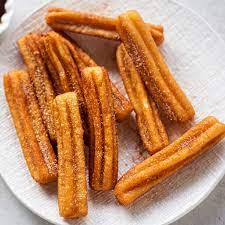

Churros

Discription
churro, a fritter of Spanish origin made of flour-based batter that is piped into
extremely hot fat and fried, then rolled in cinnamon-laced sugar, resulting in a
treat that is sweet and crispy on the outside but fluffy on the inside.
Ingredients
- 1 cup of water
- 2 1/2 tablespoons white sugar
- 2 tablespoons of vegetable oil
- 1 cup all-purpose flour
- 2 quarts oil for frying
- 1/2 cup white sugar to taste
- 1 teaspoon ground cinnamon
Steps
- Combine water, 2 ½ tablespoons sugar, salt, and 2 tablespoons vegetable oil in
a small saucepan and place over medium heat. Bring to a boil and remove from
the heat. Stir in flour, stirring until mixture forms a ball.
- Heat oil for frying in a deep fryer or deep pot to 375 degrees F (190 degrees C).
- Transfer dough to a sturdy pastry bag fitted with a medium star tip. Carefully
pipe a few 5- to 6-inch strips of dough into the hot oil; work in batches so
you don't crowd the fryer. Cook until golden; use a spider or slotted spoon to
transfer churros to paper towels to drain.
- Combine 1/2 cup sugar and cinnamon. Roll drained churros in cinnamon and sugar mixture.